03/ 15
Krajobraz · Wrocław · 2026
Wyspa Opatowicka
Niewielkie interwencje, które zamieniają dziką wyspę na Odrze w przestrzeń spaceru, odpoczynku i kontaktu z wodą.
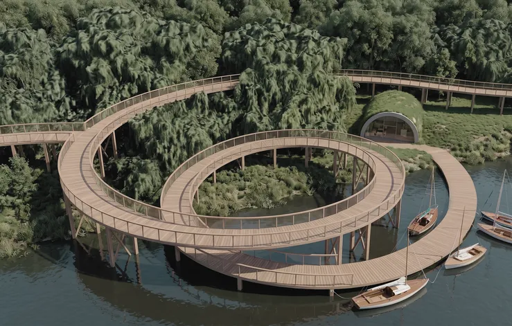
Wyspa Opatowicka zachowuje kameralny, naturalny charakter, oparty na harmonijnym współistnieniu zieleni i wody. Niewielkie interwencje projektowe mają przekształcić ją w bezpieczną i komfortową przestrzeń rekreacyjną dla mieszkańców Wrocławia.
Kluczowym założeniem jest wytyczenie i utwardzenie ciągów pieszo‑spacerowych, uzupełnionych wyniesioną ścieżką prowadzącą pomiędzy drzewami i nad lustrem wody. Koncepcja rozwija trzy wątki: spacer między ziemią a koronami drzew, „Wyspę Miłości” — miejsce na spacery we dwoje i chwilę wytchnienia — oraz strefę aktywnej rekreacji.
Spacer między ziemią a koronami drzew.
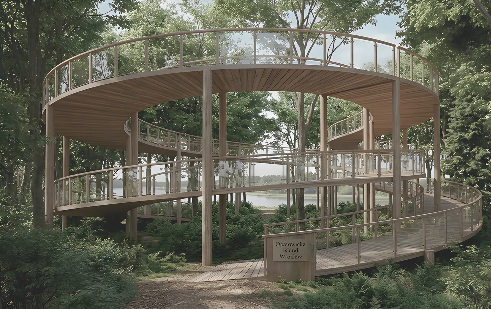
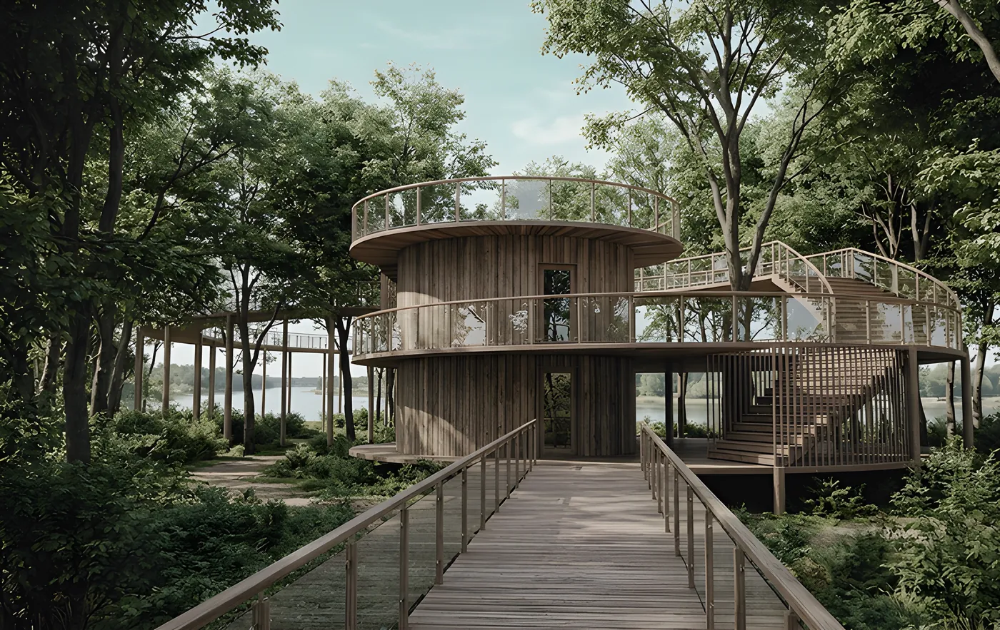
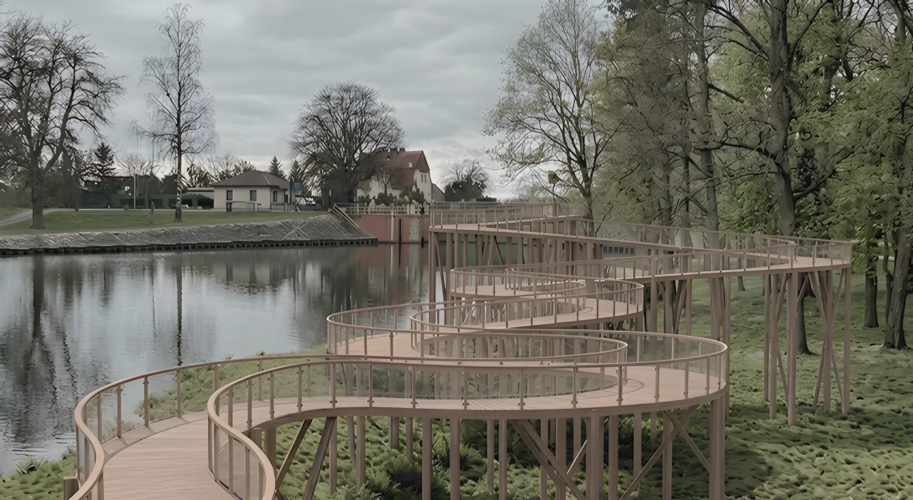
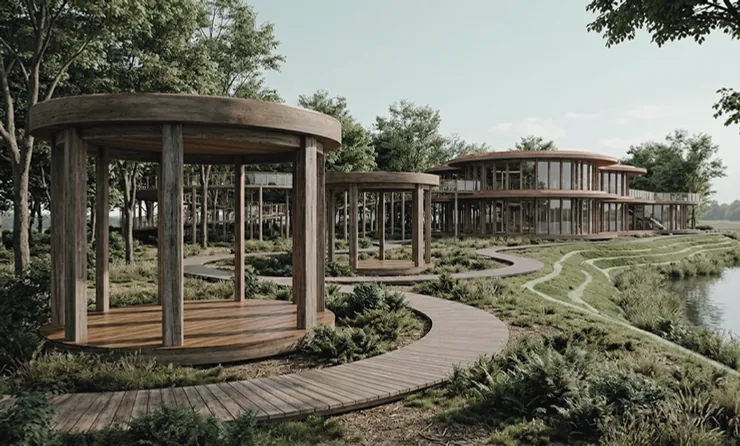
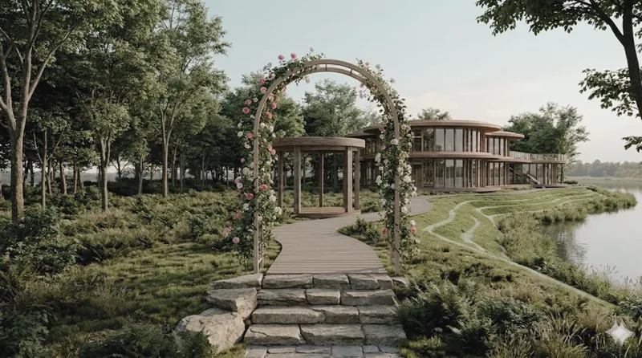
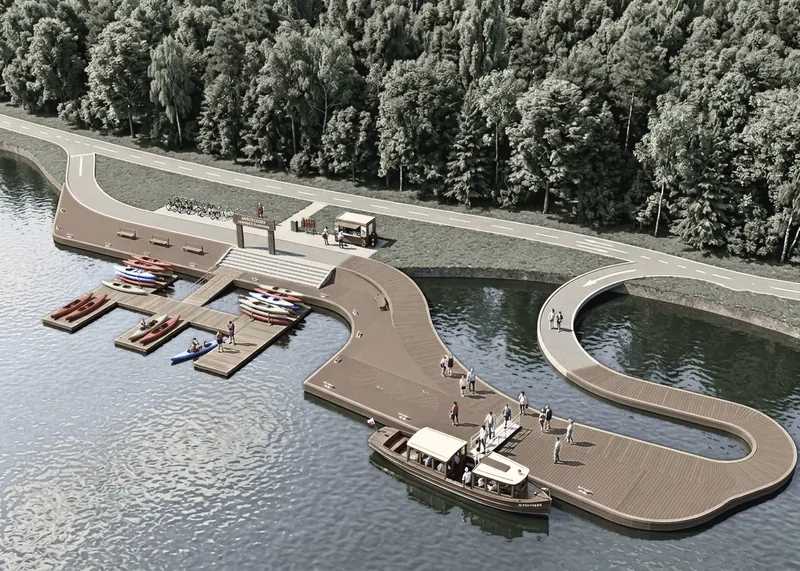
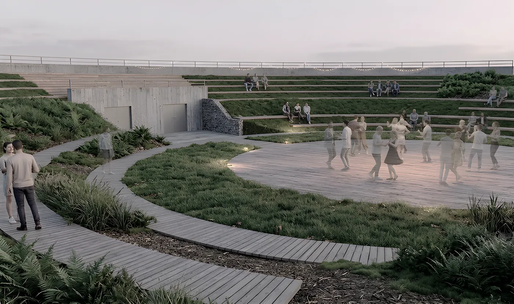
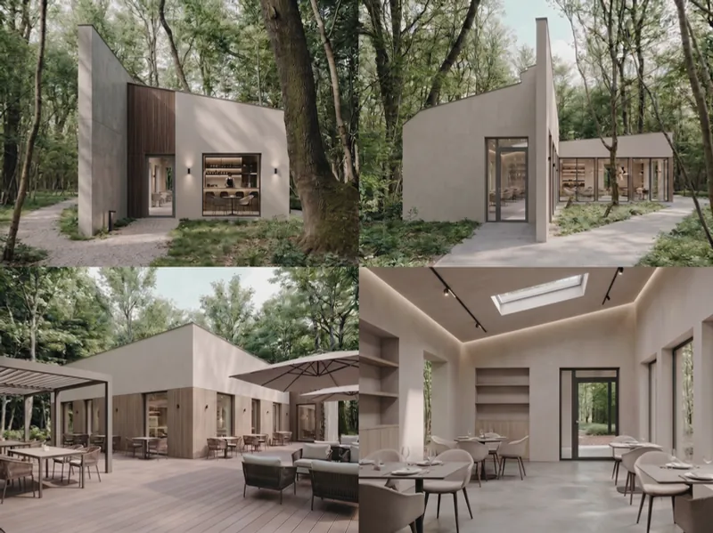
—
Plansze
Plansze projektowe w pełnej rozdzielczości — kliknij, aby powiększyć.

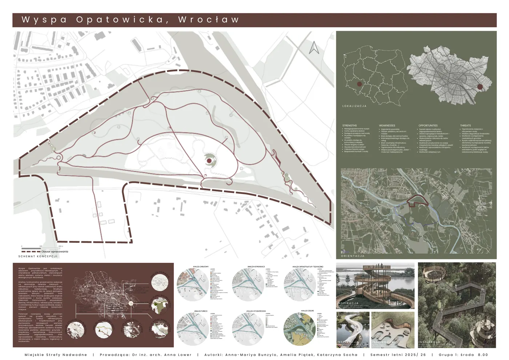

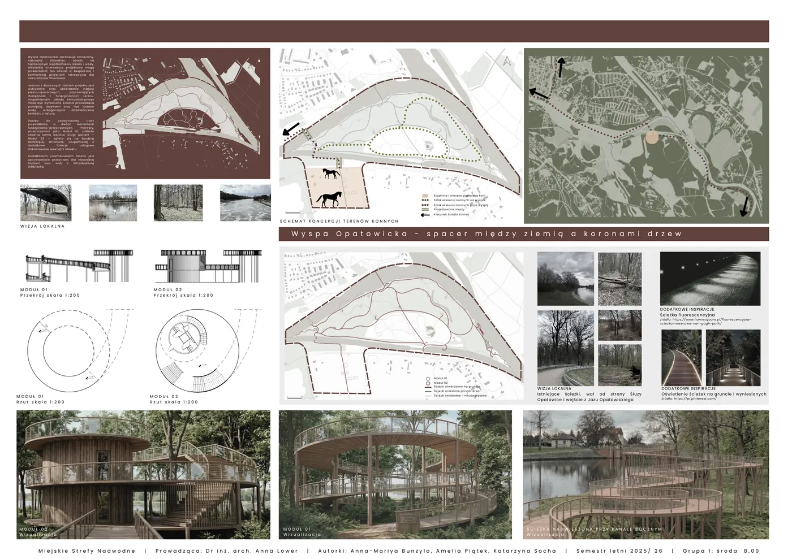

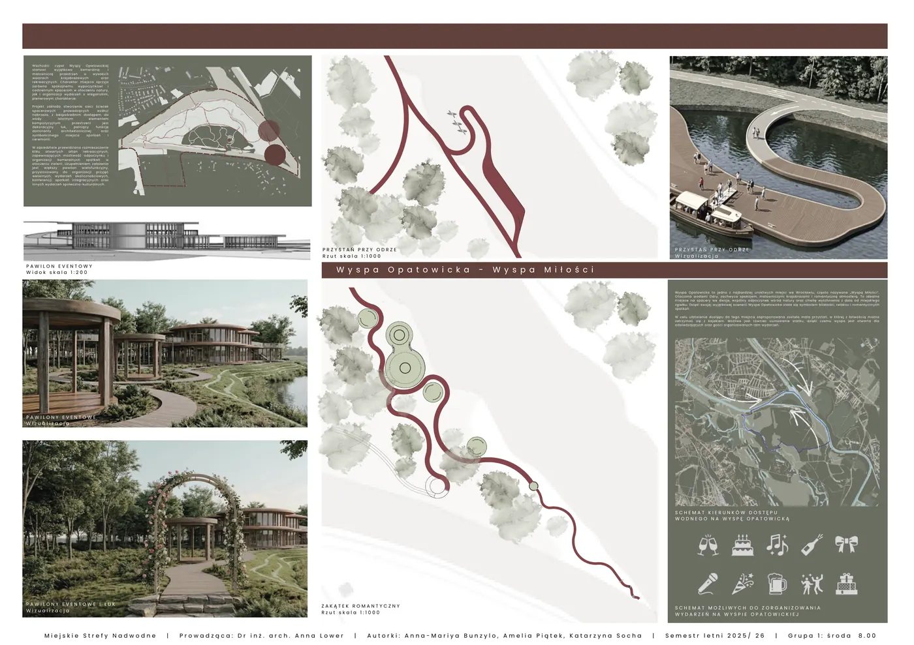

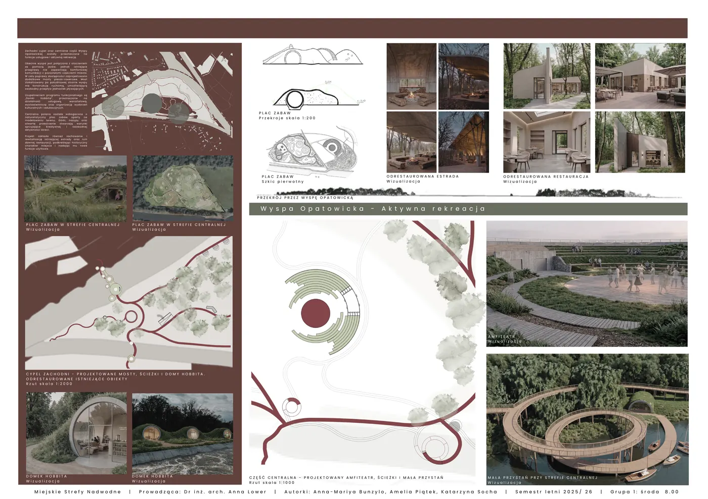